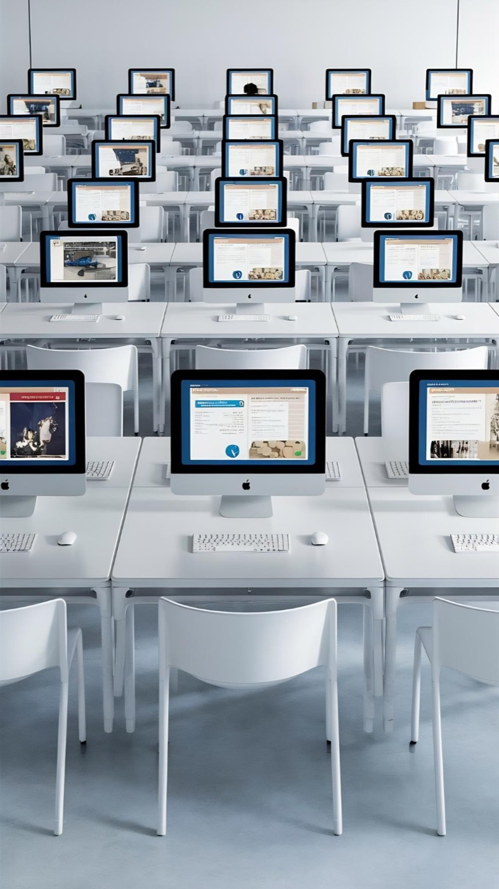

Usluge uz naknadu
Usluge Centra
Uz predinkubacijski program, FOIward nudi i usluge koje se mogu ugovoriti uz naknadu: ciljanu stručnu podršku za MSP-ove, korištenje prostora, pristup laboratorijskoj opremi i mikrokvalifikacije. Lokalne točke razvoja pomažu korisnicima da se informiraju, usmjere i povežu s odgovarajućom uslugom Centra.
- Stručna podrška za MSP-ove
- Coworking, uredi i dvorane
- Smart Living Labovi i oprema
- Mikrokvalifikacije
- Lokalne točke razvoja
